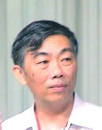
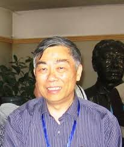
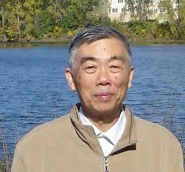
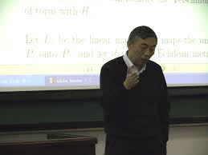

丁伟岳院士祖籍浙江舟山。1945年4月26日出生于上海 市，1968年从北京大学数学力学系毕业，1978年考入中国科学院数学研究所攻读常微分方程方向研究生，1981年毕业留在中国科学院数学研究所工 作，1986年晋升为副研究员，1988年破格晋升为中国科学院数学研究所研究员。1991年国家教委和国家学位委员会授予“做出突出贡献的中国博士学位 获得者”光荣称号。1997年当选为中国科学院院士，2000年至2014年任北京大学数学科学学院教授同时兼任中国科学院数学与系统科学院研究员。1999年至2003年担任中国科学院数学研究所学术委员会主任。2000年至2010年担任北京大学数学研究所所长，2004年至2010年担任北京大 学“数学及其应用”教育部重点实验室主任。丁伟岳院士研究领域包括常微分方程，半线性椭圆形方程，调和映射和极小曲面，预定数量曲率问 题，Schrodinger 流，复几何中的Kahler-Einstein度量存在性等，发表学术论文40余篇，1993年获国家自然科学二等奖和陈省身数学奖，2011年获何梁何 利基金科学与技术进步奖。2002年在世界数学家大会上做45分钟报告。丁伟岳院士生前曾担任过中国数学会副理事长。在2002年12月至2012年12 月期间任中国民主建国会第八届和第九届中央常务委员会委员，并曾任第九届、十届、十一届全国政协委员。
一、学术生涯
丁伟岳1951年随其父母迁居北京。1962年考取北京大学数学力学系，在大学二年级时选择了 他本人感兴趣的数学专业。当时中国处于一个特别的政治时期， 致使他们本该上满五年的大学课程实际只上了三年，第四年就被政治运动所打断。他们这些本该在1967年就毕业的学生，1968年才在“工宣队”的领导下进 行毕业分配。丁伟岳被分配到青海省西宁的光明化工厂。但这时党中央又要求“知识分子接受再教育”，所以在去工厂之前，于1968年9月他们被派遣到安徽霍 邱县城的城西湖军垦农场参加劳动锻炼。从1970年6月开始，丁伟岳作为一名化工工人，先在西宁，后又于1971年初调到四川泸州火炬化工厂（现属于重庆 市）工作。在火炬化工厂他一直工作到1978年的秋天。1978年是丁伟岳人生发生重要转折的一年。这一年中国恢复招考研究生，他报考参加了中国科学院数 学所历史上规模空前、有一千三百多人应试的研究生招生考试。中科院数学所最后只录取了三十余人。丁伟岳被录取了。据说常微分方程他考了第一，而偏微分方程 他虽然只做了两道题却也排在第二。丁伟岳进入中科院数学所后，师从王光寅研究员研习微分方程，1981年研究生毕业，留在该数学所工作。1986中国科学院试点给在职研究人员授予博士学位，丁伟岳因此获得博士学位。这一年中国恢复 职称评定，鉴于丁伟岳的研究工作，他也被提升为副研究员1988年他被破格提升为研究员。1998年年末，中国科学院将其下属的数学所、应用数学所、系统科学研究所以及计算所联合组建为数学与系统科学研究院。丁伟岳被任命为数学与系统科学研究院学术委员会委员及数学所学术委员会主任。1997年当选为中国科学院院士。2000年经丁伟岳本人申请，中国科学院数学与系统科学研究院同意其去北京大学数学学院工作。同时保留他在中国科学院数学与系统科学研究院的职务。同年5月北京大学任命他为北京大学数学研究所所长。
二、学术成就
刚开始做研究时，丁伟岳对常微分方程的周期解的存在性感兴趣。1982年9月他第一次踏出国 门，赴美国明尼苏达大学任访问讲师，并在那里结识了倪维明。虽 然丁伟岳当时刚刚接触偏微分方程，但是丁伟岳已看过不少用非线性泛函分析来研究常微分方程周期解存在性的文献，他知道这些方式与技巧也适用于某些偏微分方 程的研究。因为与倪维明比较投缘，并有相近的研究兴趣，学习和研究几何分析。受其影响，北大数学系和中国科学院数学所的非线性研究群体逐步涉及微分几何中偏微分方 程问题的研究。丁伟岳这个时候开始研究黎曼流形间的调和映射以及共他们决定合作研究一些全空间上半线性椭圆方程。这样他的研究领域转向了偏微分方程。
我们知道20世纪70年代末至80年代微分几何迎来了发展的黄金时期，一些重大的问题得到解 决，一些新的理论与方法诞生。1984年著名华人数学家丘成桐 第一次来大陆讲学，他倡导中国数学家与年轻学子形几何中预定数量曲率的偏微分方程问题。他的研究领域从偏微分方程又转向了几何分析。
1. Poincare-Birkhoff 不动点定理与半线性椭圆方程
2. .调和映射与极小曲面
3. Schrödinger 流
4. 预定数量曲率问题及Moser-Trudinger不等式
5. Kahler-Einstein 度量
三、学术风范
丁伟岳的学习方法很特别。据其回忆，从研究生一年级开始他就很喜欢看数学研究的文献，经常从中 国科学院或中国科学院数学研究所的图书馆借几大本期刊查阅。 刚开始，看得懂的很少，对那些不懂的知识，他再从教科书上去学。日积月累慢慢地看得懂的文献就多起来了。既无特别的目的也不限制自己只读哪一研究领域的文 献，全凭兴趣所致。这是一种以问题为向导的学习方法，可以很快进入研究领域。其关键在于要有较高的悟性，能够深入领悟前人研究的思想方法和问题的全貌。
丁伟岳对其所研究的领域有比较全面的宏观把握，对其所研究的问题有独到的见解。他在做研究工作 时往往从问题的反面着眼，特别注重实例的考察与分析以洞察到 问题的关键所在。他在研究调和映射热流是否产生奇点的问题，欧氏空间上的共形纯量场方程在什么情况下可解等问题均是如此。他有时将一些传统的方法反其道而 用之。如别人常用山路定理来证明所设条件的充分性，而他却用其来证明所设条件的必要性。
丁伟岳以纯正诚恳之心在数学领域发掘未知和追求真理，常常达到一种忘我的境界。正当他在数学王 国辛勤耕耘时，疾病已悄悄向他袭来。1988年丁伟岳发现自 己有乙型肝炎，他的病绵延多年不能痊愈。1990年从美国回来后，他的朋友和学生发现他的身体状况不好，有时喘气很粗。到1994年不得不取消到德国访问 Jost的计划， 1995年春丁伟岳开始尝试服用一种民间秘方。没想到此种药方对他的病很灵验，此后他的身体逐渐好转，但完全恢复已是三年以后。然而，在他病重期间，他没 有停止数学研究。如1994年，他与田刚讨论了能量有界的一类逼近调和映射的收敛行为，证明了一个能量恒等式。当他的身体稍有好转，他又忘我的投入到数学 研究当中。1996年年末，正在莱比锡马普数学科学研究所做洪堡学者的李嘉禹给丁伟岳来信说，时任马普所所长之一的Jost想邀请他去合作研究。他于 1997年1月启程赴莱比锡，进行为期两个月的访问。但是，在莱比锡访问的这段时间正是他应该准备好申报院士材料的时间，因为1996年的秋天数学所推荐 丁伟岳为院士候选人，后经科学院遴选成为了科学院推荐的候选人。在访问过程中丁伟岳收到他研究生时期的同学、数学所党委书记李福安的来信，说他正在帮丁伟 岳准备申报院士的材料。他本人却已把申报院士须准备材料这件事忘了。
孔子说：“君子进德修业，忠信所以进德也。修辞立其诚，所以居业也”（《周易·乾·九三爻·文 言》）。荀子说：“以仁心说，以学心听，以公心辨”（《荀 子·正名》）。2001年，中国数学会的组织委员会向国际数学联盟推荐田刚为1小时大会报告人，还推荐了若干45分钟分会报告的报告人。丁伟岳被推荐做 45分钟报告。后来他在大会上报告了他和王友德关于Schrodinger流的工作。他在为《中国现代数学家传记》所写一文中谦虚地说关于高维 Schrodinger流局部存在性这一工作的主要想法是王友德的，他只在技术和文字上面做了加工。事实上，在丁伟岳与王友德的讨论过程中，丁伟岳说的一 些他自己不经意的话对王友德的构思具有启迪作用。
丁伟岳对我国的数学事业做出了许多贡献。1998年国际数学联盟委托中国数学会组织举办 2002年国际数学家大会。丁伟岳被任命为中国数学会成立的组委会 下属的科学委员会主任。在2002年，丁伟岳领导的科学委员会承担着巨大的责任，他常常一天工作16小时以上。是年8月，在北京召开的国际数学家大会取得 空前成功。
四、春风化雨
丁伟岳教导学生学习和研究的方法可以总结为：“带着问题去学习，在研究中学习。”他反对他的学 生漫无目的去读书，这样很容易成为一个虽饱读兵书而不知所云 的人。他鼓励他的学生去发掘一些尚不为人们所关注的、却又具有潜在研究价值和发展前景的新问题。另一方面，他也倡导年轻人要有胆识去碰一些名家做过或者名 家关注的问题，并要学生向大师学习。
丁伟岳热心教育事业，授课或演讲总能得到听众的热烈响应和赞美。他准备讲稿一丝不苟，能抓住问 题之关键进行直截了当而又深入浅出的讲解。他的演讲常能激发 听众对所讲问题的兴趣，甚或就此涉足此问题的研究。他常教导他的学生或身边的后学在演讲或写文章之先要将所述问题想得非常清楚，这样可以达到事半功倍的效 果。在学术上，他对学生严格要求；在生活上，他对学生关怀备至；在做人上，他能以身作则，淡泊名利。到目前为止，他已培养学生二十余人，有的已成为所在领 域的知名专家，或中国数学领域的科研骨干。
丁伟岳生性豪爽，助人为乐。他一直以发现和培养年轻的数学人才为乐事。不失时机地引导年轻学者 去研究一些有重要学术价值的问题，或推荐他们到更适合他们发 展的地方求学和研究。当他获知同行的学者做出重要成果，他总是感到由衷的高兴。尤其是后学取得好的成果，他除了倍加赞赏外，还会尽其所能的帮助和提携他 们。他期盼的是在中国大地上能产生数学大师和奇才。
  